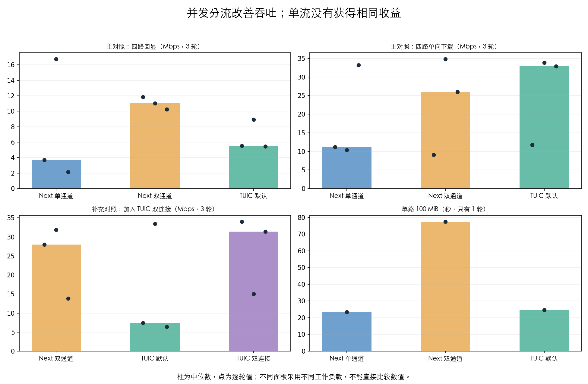

2026-11-22 · 安卓 TFY-AN00 / Android 12 · 同 Wi-Fi 与香港 VPS · 原型核心测试
实现了可选双通道并发吞吐模式，本轮并发结果改善；默认仍保留单通道。主对照三轮的四路单向下载中位数从原版 11.16 提高到 25.98 Mbps，约 2.33 倍；TUIC 默认为 32.88 Mbps。四路回显从 3.71 到 11.04 Mbps，TUIC 默认为 5.53 Mbps。这两个测试的工作负载不同，不可混同。
后续连接数相同的对照中，四路下载中位数为 Next 双通道 28.03、TUIC 默认 7.45、TUIC 双连接 31.42 Mbps。两轮四路回显的均值/中位数分别为 Next 双通道 5.46、TUIC 默认 2.94、TUIC 双连接 6.94 Mbps。TUIC 默认在两场下载对照中的波动很大，所以不能把不同时间的中位数拼接成一个协议固定排名。证据支持保留独立连接分流作为吞吐选项，未证明 Next 在相同连接资源下领先 TUIC。
单条流不会被拆分，因此没有结构上的单流提速。本轮单路 100 MiB 只测一次：原版 23.347 秒、吞吐版 77.427 秒、TUIC 24.701 秒；虽都校验通过，吞吐版仍出现慢连接。短请求也没有全面改善。不能以并发成绩宣布单连接失速已修复，不能默认替换原配置。
主对照每组 43/43 短请求成功；主对照 36 条并发下载、12 次单路下载全部通过校验；补充对照另 36 条并发下载全部通过校验。本地 race/vet 通过。手机 VPN 与保持唤醒设置已恢复，临时服务、端口、凭证已清理，生产 443/18447 的 TCP/UDP 保持监听。

本轮保留原 BBR、接收窗口、即时 OPEN、TLS 与认证格式，新增 Config.QUICLanes=2：新 TCP 流按活跃流数量分配到两个独立连接池；串行请求优先使用主通道，并发时按需创建第二条连接。已经开始的流固定在原连接，不迁移、不重放，不把一条 TCP 流拆到两条 QUIC 连接。UDP 控制与数据仍交给主通道，避免错误的 association 归属。
默认值 0/1 维持单通道。双通道平时至多两条 QUIC 连接，每个池在请求数耗尽轮换时沿用原先至多两条物理连接的边界，因此轮换期间总上限为四条；所有池随 Close、Reset、上层取消一起关闭或重置。额外连接会增加握手、缓冲和资源成本。本轮没有能耗验收，不能声称更省电。
原版与吞吐版共用同一服务端与 UDP 19458，唯一主差异为连接分配；TUIC 默认用 19451，实际 CatNode/Xray TUIC v5，BBR、ReduceRtt=false、FastOpen=false。两端证书验证开启。Android 同一原生对照程序运行，应用 VPN 在测试时断开，结束后恢复。未改正式 App、生产 443/18447 或面板。
协议按轮次轮换顺序，正式追踪关闭。单/四路回显固定 10 秒，统计收到且模式校验通过的载荷，连接/TLS 准备不计入这 10 秒；上传方向与下行共享公网，因此它不是纯单向下载测速。四路单向下载则是每任务 8 MiB、四任务共享一个协议客户端，统计从客户端创建到四任务校验完成的总耗时和已校验字节。TUIC 默认仍为一个客户端池；双连接对照明确使用两个未改动的 TUIC 客户端，将新流按活跃数量分配，而非改变 TUIC 协议。
32 MiB 单路下载三轮、每轮预算 90 秒；100 MiB 只做一轮、预算 180 秒，不能算 P95 或稳定性承诺。MiB=1,048,576 字节。失败逐次保留，下载必须校验内容才算完整。短请求每组冷启动 12、连续 12、四路 16、预热 3；P50/P95 用成功样本 nearest-rank，12 个样本的 P95 实际为该组最大值。单路吞吐版仅使用主通道，观察到的差异不能归因为双连接提速。
| 实现 | 并发 | 有效组/总组 | 中位 Mbps | 各轮 Mbps |
|---|---|---|---|---|
| Next 原版（单通道） | 1 | 3/3 | 6.88 | 9.86, 4.64, 6.88 |
| Next 原版（单通道） | 4 | 3/3 | 3.71 | 3.71, 16.75, 2.15 |
| Next 吞吐版（双通道） | 1 | 3/3 | 7.85 | 1.44, 7.85, 11.81 |
| Next 吞吐版（双通道） | 4 | 3/3 | 11.04 | 11.85, 11.04, 10.26 |
| TUIC 默认 | 1 | 3/3 | 5.24 | 4.48, 5.24, 13.42 |
| TUIC 默认 | 4 | 3/3 | 5.53 | 5.53, 8.94, 5.45 |
| 实现 | 完整任务 | 总任务 | 总吞吐中位 Mbps | 各轮总吞吐 Mbps |
|---|---|---|---|---|
| Next 原版（单通道） | 12 | 12 | 11.16 | 11.16, 10.33, 33.23 |
| Next 吞吐版（双通道） | 12 | 12 | 25.98 | 9.05, 34.83, 25.98 |
| TUIC 默认 | 12 | 12 | 32.88 | 11.77, 33.89, 32.88 |
以下是后续独立轮次，用来区分增加拥塞窗口与协议效率，不能与前一场不同时间的数据直接拼为一轮。TUIC 双连接同样承担额外资源成本。
| 实现 | 并发 | 有效组/总组 | 中位 Mbps | 各轮 Mbps |
|---|---|---|---|---|
| Next 吞吐版（双通道） | 1 | 2/2 | 7.56 | 8.9, 6.23 |
| Next 吞吐版（双通道） | 4 | 2/2 | 5.46 | 7.5, 3.43 |
| TUIC 默认 | 1 | 2/2 | 4.82 | 5.31, 4.32 |
| TUIC 默认 | 4 | 2/2 | 2.94 | 2.94, 2.95 |
| TUIC 双连接对照 | 1 | 2/2 | 8.72 | 10.58, 6.85 |
| TUIC 双连接对照 | 4 | 2/2 | 6.93 | 7.55, 6.32 |
| 实现 | 完整任务 | 总任务 | 总吞吐中位 Mbps | 各轮总吞吐 Mbps |
|---|---|---|---|---|
| Next 吞吐版（双通道） | 12 | 12 | 28.03 | 28.03, 31.88, 13.84 |
| TUIC 默认 | 12 | 12 | 7.45 | 7.45, 33.44, 6.44 |
| TUIC 双连接对照 | 12 | 12 | 31.42 | 34.01, 15.06, 31.42 |
| 实现 | 阶段 | 成功/总数 | 首字节 P50 ms | 首字节 P95 ms |
|---|---|---|---|---|
| Next 原版（单通道） | cold | 12/12 | 671.12 | 1258.05 |
| Next 原版（单通道） | warm | 12/12 | 306.31 | 539.18 |
| Next 原版（单通道） | batch | 16/16 | 291.24 | 1229.2 |
| Next 吞吐版（双通道） | cold | 12/12 | 888.49 | 1965.59 |
| Next 吞吐版（双通道） | warm | 12/12 | 421.52 | 1200.34 |
| Next 吞吐版（双通道） | batch | 16/16 | 529.09 | 1339.42 |
| TUIC 默认 | cold | 12/12 | 809.35 | 2973.01 |
| TUIC 默认 | warm | 12/12 | 506.52 | 961.91 |
| TUIC 默认 | batch | 16/16 | 482.81 | 936.88 |
| 实现 | MiB | 轮次 | 完整 | 耗时 s | 收到 MiB | 校验 | 错误 |
|---|---|---|---|---|---|---|---|
| Next 原版（单通道） | 100 | 1 | True | 23.347 | 100.0 | True | |
| Next 吞吐版（双通道） | 100 | 1 | True | 77.427 | 100.0 | True | |
| TUIC 默认 | 100 | 1 | True | 24.701 | 100.0 | True | |
| Next 原版（单通道） | 32 | 1 | True | 7.993 | 32.0 | True | |
| Next 吞吐版（双通道） | 32 | 1 | True | 8.927 | 32.0 | True | |
| TUIC 默认 | 32 | 1 | True | 32.185 | 32.0 | True | |
| Next 吞吐版（双通道） | 32 | 2 | True | 8.264 | 32.0 | True | |
| TUIC 默认 | 32 | 2 | True | 8.419 | 32.0 | True | |
| Next 原版（单通道） | 32 | 2 | True | 28.507 | 32.0 | True | |
| TUIC 默认 | 32 | 3 | True | 22.602 | 32.0 | True | |
| Next 原版（单通道） | 32 | 3 | True | 8.696 | 32.0 | True | |
| Next 吞吐版（双通道） | 32 | 3 | True | 32.705 | 32.0 | True |
同端口保持 BBR 不变，按 GSO 开/关/关/开筛选。关闭服务端 GSO 的四路结果一次提升、一次较小，单路没有稳定改善；未纳入正式吞吐版，也没有更改系统网络参数。以下 8 秒筛选不能与正式 10 秒样本合并。
| 试验 | 实现 | 并发 | Mbps | 成功流 |
|---|---|---|---|---|
| gso-1-on | Next 原版（单通道） | 1 | 6.13 | 1 |
| gso-1-on | TUIC 默认 | 1 | 5.24 | 1 |
| gso-1-on | Next 原版（单通道） | 4 | 3.03 | 4 |
| gso-1-on | TUIC 默认 | 4 | 11.55 | 4 |
| gso-2-off | Next 原版（单通道） | 1 | 6.57 | 1 |
| gso-2-off | TUIC 默认 | 1 | 4.51 | 1 |
| gso-2-off | Next 原版（单通道） | 4 | 9.19 | 4 |
| gso-2-off | TUIC 默认 | 4 | 9.42 | 4 |
| gso-3-off | Next 原版（单通道） | 1 | 5.8 | 1 |
| gso-3-off | TUIC 默认 | 1 | 10.65 | 1 |
| gso-3-off | Next 原版（单通道） | 4 | 3.9 | 4 |
| gso-3-off | TUIC 默认 | 4 | 10.22 | 4 |
| gso-4-on | Next 原版（单通道） | 1 | 8.17 | 1 |
| gso-4-on | TUIC 默认 | 1 | 12.42 | 1 |
| gso-4-on | Next 原版（单通道） | 4 | 3.42 | 4 |
| gso-4-on | TUIC 默认 | 4 | 11.44 | 4 |
双通道本质上引入第二个拥塞控制域和源端口，收益可能来自避免一个连接失速、分散 ACK/拥塞恢复或路径按五元组处理差异，不能仅凭本轮数据确定是哪一种，也不能称其为新加密算法的收益。不是在相同连接资源下证明 Next 超越 TUIC。
只有一台安卓、一个 Wi-Fi 和一个香港节点，吞吐组仅 2–3 轮；没有跨蜂窝、长期锁屏、能耗或抗识别测量。默认仍保留单通道，双通道为显式可选吞吐模式；不把一次局部改进推广为所有网络都更快。
本地 race/vet 通过；覆盖双向大载荷、半关闭、活跃流 Reset、关闭后拒绝新流、UDP association 归属以及并发下载不关闭共享客户端。各阶段 jsonl、汇总 CSV、metadata.json、sources、validation.txt 保留复现信息，不打包授权密钥。